数据网格原则与逻辑架构是一种现代的数据管理方法，旨在提高数据的可访问性、可维护性和价值创造。以下是数据网格的核心原则和逻辑架构的总结归纳：
核心原则
- 面向领域的分散式数据所有权和架构：
- 数据管理的责任和控制权分散到各个业务领域，每个领域都有专门的团队负责数据的收集、存储、处理和分发。这种分散化的方法有助于提高数据的可访问性和可维护性，同时促进跨领域的协作和数据共享。
- 数据即产品：
- 数据被视为一种产品，需要关注其质量、可用性和用户体验。数据产品化鼓励团队像对待商业产品一样对待数据，包括品牌化、营销和持续改进，确保数据对消费者来说是有用和可信赖的。
- 自助式数据基础设施作为平台：
- 建立一个自助服务平台，使得用户能够轻松地发现、访问和使用数据，而无需深入了解底层技术和复杂的数据处理流程。这种基础设施降低了技术门槛，提高了数据的可消费性。
- 联合计算治理：
- 计算治理是分散的，但是通过联合的方式进行协调和管理。不同的数据领域可以独立地进行计算和分析，同时保持整体的数据一致性和合规性。这种治理模式提高了数据处理的效率和响应速度，同时确保数据的安全和隐私。
逻辑架构
- 领域导向的数据分解和所有权：
- 组织根据业务领域进行分解，每个领域负责管理自己的数据和计算资源。这种架构支持领域内的自治和领域间的协作，同时减少了数据孤岛和提高了数据的流动性。
- 数据产品作为架构量子：
- 数据产品是最小的独立部署单元，具有高功能内聚性，并包括所有必要的结构元素，如代码、数据和元数据、基础设施等。这种设计使得数据产品可以独立于其他领域进行开发和维护。
- 多平面数据平台：
- 数据平台由多个平面组成，每个平面服务于不同的用户配置文件和需求。这些平面可能包括数据基础设施配置平面、数据产品开发者体验平面和数据网格监管平面等，每个平面都提供了一组相关的自助式服务和工具。
通过这些原则和逻辑架构，数据网格方法论旨在构建一个灵活、可扩展且可持续发展的数据生态系统，以适应不断变化的技术和市场需求。这种方法有助于组织更好地利用数据资源，推动数据驱动的决策和创新，最终实现业务增长和竞争优势。
我们渴望利用数据来增强和改善商业和生活的每一个方面，这要求我们在大规模数据管理方面进行范式转变。尽管过去十年的技术进步已经解决了数据量和数据处理计算的规模问题，但它们未能解决其他维度的规模问题：数据景观的变化、数据来源的激增、数据用例和用户的多样性以及对变化响应的速度。数据网格针对这些维度提供了解决方案，建立在四个原则之上：面向领域的分散式数据所有权和架构、数据即产品、自助式数据基础设施作为平台、以及联合计算治理。每个原则都推动了技术架构和组织结构的新逻辑视角的形成。
- 面向领域的分散式数据所有权和架构：这一原则强调数据应该根据其业务领域进行管理和组织，每个领域都有其负责人和团队，他们对数据的收集、存储、处理和分发负有完全的责任。这种分散化的方法有助于提高数据的可访问性和可维护性，同时促进跨领域的协作和数据共享。
- 数据即产品：将数据视为一种产品，意味着我们需要关注数据的质量、可用性和用户体验。数据产品化鼓励团队像对待任何其他商业产品一样对待数据，包括对其进行品牌化、营销和持续改进。
- 自助式数据基础设施作为平台：这一原则提倡建立一个平台，使得用户能够轻松地发现、访问和使用数据，而无需深入了解底层技术和复杂的数据处理流程。这种基础设施的自助服务特性，可以降低技术门槛，提高数据的可消费性。
- 联合计算治理：在数据网格中，计算治理是分散的，但是通过联合的方式进行协调和管理。这意味着不同的数据领域可以独立地进行计算和分析，同时保持整体的数据一致性和合规性。这种治理模式有助于提高数据处理的效率和响应速度，同时确保数据的安全和隐私。
通过这些原则，组织可以更好地管理和利用其数据资源，以支持快速决策、创新和业务增长。同时，这也有助于构建一个更加灵活和可扩展的数据生态系统，以适应不断变化的技术和市场需求。
本文旨在作为后续跟进文章，总结了数据网格方法，列举了其支撑原则和原则所驱动的高级逻辑架构。在我未来的文章中深入探讨数据网格核心组件的详细架构之前，建立高级逻辑模型是一个必要的基础。因此，如果你在寻找关于数据网格确切工具和方法的具体处方，本文可能会让你失望。如果你寻求的是一个简单且与技术无关的模型，该模型建立了共同的语言，请加入我们。
在上一篇文章《如何从单一数据湖迈向分布式数据网格》中，我强调了当今在架构和组织挑战方面的痛点，以便成为数据驱动型企业，利用数据竞争，或利用大规模数据创造价值。它提供了一种替代视角，自那以后吸引了许多组织的注意，并为不同的未来带来了希望。虽然原文描述了这种方法，但它将许多设计和实施的细节留给了读者的想象。在本文中，我没有意图过于规定性，扼杀围绕数据网格实施的想象和创造力。但我认为，为了推动范式向前发展，阐明数据网格的架构方面是负责任的。
本文的写作目的是为了提供一个后续的总结。它通过列举数据网格方法的基本原则和这些原则所推动的高级逻辑架构来概括数据网格方法。在我未来的文章中深入探讨数据网格核心组件的详细架构之前，建立高级逻辑模型是一个必要的基础。因此，如果你正在寻找关于数据网格确切工具和方法的具体处方，本文可能会让你失望。如果你寻求的是一个简单且与技术无关的模型，该模型建立了共同的语言，那么请继续阅读。
数据的鸿沟
我们所说的“数据”究竟指的是什么？这个问题的答案取决于你询问的对象。如今的数据景观被划分为操作数据和分析数据。操作数据存放在支持微服务的业务能力背后的数据库中，具有交易性质，保持当前状态并满足运行业务的应用程序的需求。分析数据是随时间变化的业务事实的聚合视图，通常被建模以提供回顾性或前瞻性的洞察；它用于训练机器学习模型或提供分析报告。
目前的技术、架构和组织设计反映了这两个数据平面的分歧——两种存在层面，虽然集成但又是分离的。这种分歧导致了脆弱的架构。对于许多试图连接这两个平面的人来说，持续失败的ETL（提取、转换、加载）作业和日益增长的复杂数据管道迷宫，是一个熟悉的景象，数据从操作数据平面流向分析数据平面，然后再流回操作数据平面。
这种数据鸿沟的存在，不仅在技术上造成了挑战，也在组织结构和文化上造成了隔阂。操作团队和分析团队往往有着不同的目标、工具集和工作流程，这导致了数据孤岛的出现和数据治理的困难。操作数据的关注点在于确保数据的实时性和准确性，以支持日常业务运作；而分析数据则更侧重于数据的深度挖掘和长期价值的发现。
为了克服这些挑战，我们需要重新思考数据管理的方式，寻找能够更好地整合操作和分析数据的方法。这就需要我们采用新的思维模式和架构设计，比如数据网格，它提倡将数据分散到各个领域，并通过产品化、自助服务和联合治理的方式，来提高数据的可用性和价值创造。
通过这种方式，我们可以更好地利用数据来驱动业务创新和竞争优势，同时也能够提高数据的质量和治理水平，实现数据的可持续发展。
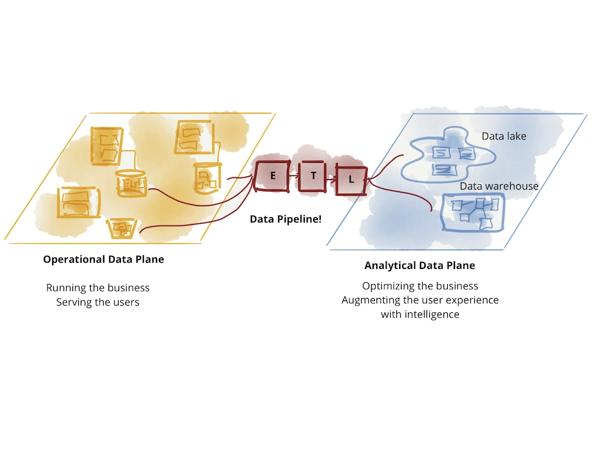图1：数据的鸿沟
分析数据平面本身已经分化为两种主要的架构和技术栈：数据湖和数据仓库；数据湖支持数据科学的访问模式，而数据仓库支持分析和商业智能报告的访问模式。在这次讨论中，我将搁置这两种技术栈之间的互动：数据仓库试图引入数据科学工作流程，而数据湖试图服务于数据分析师和商业智能。
原始的关于数据网格的讨论探索了现有分析数据平面架构的挑战。
在当前的数据管理和分析实践中，数据湖和数据仓库各自扮演着重要的角色，但它们也面临着一些挑战和限制。
数据湖旨在存储大量的非结构化和半结构化数据，提供了灵活的数据存储和处理能力，以支持数据科学和大数据分析。然而，数据湖的灵活性也带来了一些挑战，比如数据的治理和质量控制难度较大，以及对于数据分析师和业务智能用户来说，直接从数据湖中获取数据并进行分析的门槛较高。
另一方面，数据仓库则专注于为结构化数据提供高效的查询和报告能力，支持商业智能和数据分析应用。但是，数据仓库对于处理非结构化数据和实时数据的能力有限，而且在快速变化的业务需求和新兴技术面前，数据仓库的可扩展性和灵活性可能不足。
因此，我们需要一种新的方法来解决这些挑战，这正是数据网格方法所提倡的。数据网格通过将数据分解为更小、更易于管理的单元，并将这些单元分配给特定的业务领域，使得数据的所有权和责任更加明确。这种方法不仅能够提高数据的可访问性和可用性，还能够促进跨领域的协作和数据共享，从而更好地支持数据驱动的决策和创新。
在未来的文章中，我们将深入探讨数据网格核心组件的详细架构，以及如何将这些原则和技术应用到实际的业务场景中，以实现数据管理和分析的现代化。
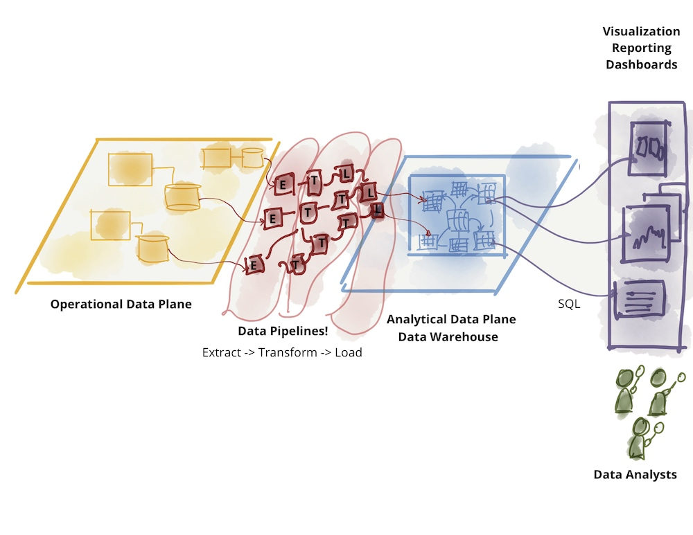
Figure 2: Further divide of analytical data - warehouse
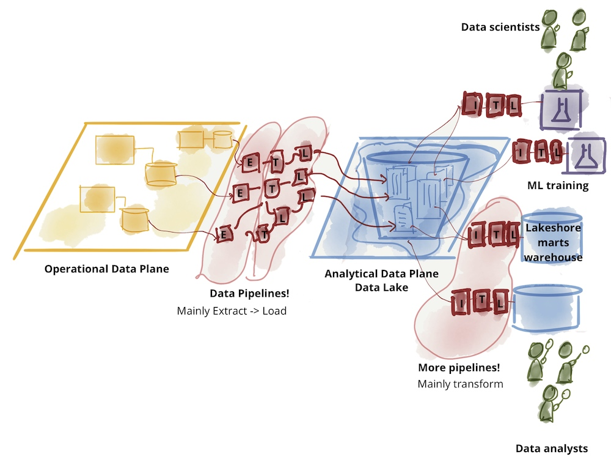
Figure 3: Further divide of analytical data - lake
数据网格认可并尊重这两个平面之间的差异：数据的性质和拓扑结构、不同的用例、数据消费者的个体特征，以及最终他们多样化的访问模式。然而，它试图在一个不同的结构下连接这两个平面——一个基于领域的倒置模型和拓扑结构，而不是基于技术栈，并专注于分析数据平面。当今可用于管理这两种数据原型的技术差异，不应导致组织、团队和从事这些工作的人员的分离。在我看来，操作性和交易性数据技术和拓扑已相对成熟，并且在很大程度上由微服务架构推动；数据隐藏在每个微服务的内部，通过微服务的API进行控制和访问。是的，在实现真正的多云原生操作数据库解决方案方面，创新的空间仍然存在，但从架构的角度来看，它满足了业务的需求。然而，正是对分析数据的管理和访问，在大规模上仍然是一个摩擦点。这正是数据网格关注的地方。
我确实相信，在未来的某个时候，我们的技术将发展到使这两个平面更加紧密地结合在一起，但就目前而言，我建议我们保持它们各自的关注点分开。
数据网格的方法论提供了一种新的视角，以领域为中心来组织和管理数据，而不是依赖于传统的技术栈。这种方法强调了数据的领域属性，将数据视为独立的、自治的实体，每个实体都有自己的生命周期、治理和访问模式。通过这种方式，数据网格试图弥合操作数据平面和分析数据平面之间的鸿沟，同时保持它们的独立性和专业化。
数据网格鼓励在组织内部建立一个更加分散的数据治理模型，其中数据团队和业务团队共同负责数据的质量、安全性和可用性。这种模型不仅能够提高数据的效率和响应速度，还能够促进跨部门和团队的协作，从而更好地支持数据驱动的决策和创新。
尽管我们期待着未来技术的进步能够进一步缩小操作数据和分析数据之间的差距，但在目前阶段，数据网格提供了一种切实可行的解决方案，以应对大规模分析数据管理的挑战。通过采用数据网格原则，组织可以更好地利用数据来推动业务增长和创新，同时确保数据的质量和合规性。
数据网格的核心原则和逻辑架构
数据网格的目标是在大规模上从分析数据和历史事实中获取价值——这里的“规模”指的是数据景观的不断变化、数据来源和消费者的激增、使用案例所需的多样性转换和处理，以及对变化的快速响应。为了实现这一目标，我认为有四个基本原则是任何数据网格实施所体现的，以实现规模的承诺，同时提供必要的质量和完整性保证，使数据可用：1）面向领域的分散式数据所有权和架构，2）数据即产品，3）自助式数据基础设施作为平台，4）联合计算治理。
虽然我预期这些原则的实践、技术和实施会随着时间的推移而变化和成熟，但这些原则本身保持不变。
我期望这四个原则是集体必要且充分的；在实现规模和弹性的同时，解决关于数据孤岛化或运营成本增加的担忧。让我们深入探讨每个原则，然后设计支持它的概念架构。
-
面向领域的分散式数据所有权和架构：这一原则强调数据应该根据其业务领域进行管理和组织，每个领域都有其负责人和团队，他们对数据的收集、存储、处理和分发负有完全的责任。这种分散化的方法有助于提高数据的可访问性和可维护性，同时促进跨领域的协作和数据共享。
-
数据即产品：将数据视为一种产品，意味着我们需要关注数据的质量、可用性和用户体验。数据产品化鼓励团队像对待任何其他商业产品一样对待数据，包括对其进行品牌化、营销和持续改进。
-
自助式数据基础设施作为平台：这一原则提倡建立一个平台，使得用户能够轻松地发现、访问和使用数据，而无需深入了解底层技术和复杂的数据处理流程。这种基础设施的自助服务特性，可以降低技术门槛，提高数据的可消费性。
-
联合计算治理：在数据网格中，计算治理是分散的，但是通过联合的方式进行协调和管理。这意味着不同的数据领域可以独立地进行计算和分析，同时保持整体的数据一致性和合规性。这种治理模式有助于提高数据处理的效率和响应速度，同时确保数据的安全和隐私。
通过这些原则，组织可以更好地管理和利用其数据资源，以支持快速决策、创新和业务增长。同时，这也有助于构建一个更加灵活和可扩展的数据生态系统，以适应不断变化的技术和市场需求。在未来的文章中，我们将深入探讨数据网格核心组件的详细架构，以及如何将这些原则和技术应用到实际的业务场景中，以实现数据管理和分析的现代化。
领域所有权
数据网格的核心理念在于分散化和分布责任，将责任交给最接近数据的人，以支持持续的变革和可扩展性。问题在于，我们如何分解和分散数据生态系统的组件及其所有权。这里的组件由分析数据、其元数据以及提供服务所需的计算组成。
数据网格遵循组织单元的接缝作为分解的轴线。我们今天的组织是基于其业务领域进行分解的。这种分解将连续变化和演变的影响局部化，大部分局限于领域的有界上下文中。因此，将业务领域有界上下文作为数据所有权分布的良好候选者。
在本文中，我将继续使用原始文档中的相同用例——“一家数字媒体公司”。可以想象，媒体公司根据领域如“播客”（管理播客发布及其主持人的团队和系统）、“艺术家”（管理艺术家入职和支付的团队和系统）等，划分其运营以及支持运营的系统和团队。数据网格主张，分析数据的所有权和服务应尊重这些领域。例如，管理“播客”的团队在提供发布播客的API的同时，也应负责提供随时间变化的“已发布播客”的历史数据，以及其他事实，如随时间变化的“听众人数”。有关此原则的更深入探讨，请参见面向领域的数据分解和所有权。
逻辑架构：面向领域的数据和计算
为了促进这种分解，我们需要构建一个按领域排列分析数据的架构。在这个架构中，领域对组织的其余部分的接口不仅包括运营能力，还包括领域所服务的分析数据的访问。例如，“播客”领域提供了“创建新的播客剧集”的运营API，但也提供了检索“过去
以下示例展示了面向领域数据所有权的原则。这些图表仅为逻辑表示和示例性展示，并不旨在完整。
每个领域可以公开一个或多个运营API，以及一个或多个分析数据端点。
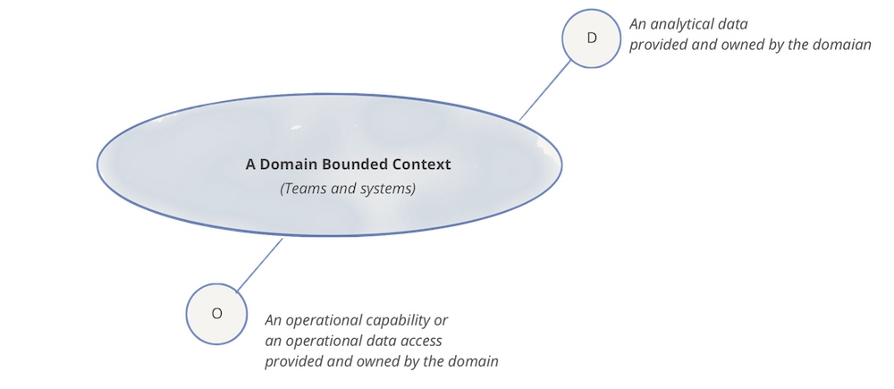
图4：符号表示：领域、其分析数据和运营能力
自然地，每个领域可能依赖于其他领域的运营和分析数据端点。在以下示例中，“播客”领域消费了来自“用户”领域的“用户更新”分析数据，以便通过其“播客听众人口统计”数据集提供播客听众的人口统计图像。
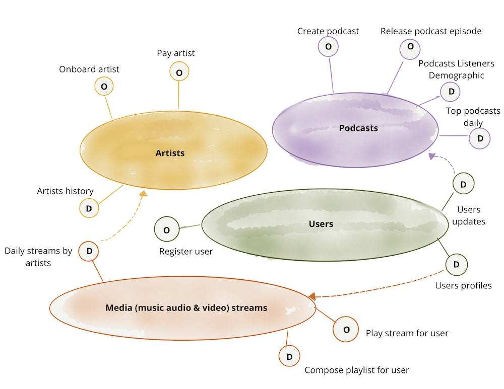
图5：示例：领域导向的分析数据所有权以及运营能力的示例
注意：在示例中，我使用了命令式语言来访问运营数据或能力，例如“支付给艺术家”。这仅仅是为了强调访问运营数据与分析数据意图之间的区别。我确实认识到，在实践中，运营API是通过更声明式的接口实现的，例如访问RESTful资源或GraphQL查询。
数据即产品
现有分析数据架构面临的挑战之一是发现、理解、信任以及最终使用高质量数据的高摩擦和成本。如果不加以解决，随着提供数据的领域（即数据的去中心化）数量和团队的增加，这个问题只会加剧。这将是我们第一个原则——去中心化——的后果。数据即产品原则旨在解决数据质量和长期存在的数据孤岛问题；或者正如Gartner所称的“暗数据”——“组织在正常业务活动中收集、处理和存储的信息资产，但通常未能用于其他目的”。领域提供的分析数据必须被视为一种产品，而该数据的使用者应被视为客户——快乐且满意的客户。
原始文章列举了一系列能力，包括可发现性、安全性、可探索性、可理解性、可信度等，这些都是数据网格实施应支持的能力，以使领域数据被视为一种产品。文章还详细介绍了组织必须引入的角色，如领域数据产品所有者，负责确保数据作为产品交付的客观措施。这些措施包括数据质量、数据消费的缩短前置时间，以及通过净推荐者得分等方式提高数据用户满意度。领域数据产品所有者必须深刻了解数据使用者是谁、他们如何使用数据，以及他们舒适地消费数据的本地方法是什么。对数据使用者如此亲密的了解，导致了满足他们需求的数据产品界面的设计。实际上，对于网格上的大多数数据产品，有一些传统的人物角色，他们有独特的工具和期望，数据分析师和数据科学家。所有数据产品都可以开发标准化的接口来支持他们。数据使用者和产品所有者之间的对话是建立数据产品界面的必要环节。
每个领域将包括数据产品开发人员角色，负责构建、维护和服务领域的数据产品。数据产品开发人员将与领域中的其他开发人员一起工作。每个领域团队可能提供一个或多个数据产品。也可以组建新的团队来服务那些不适合现有运营领域的数据产品。
注意：与过去的范式相比，这是一个倒置的责任模型。数据质量的责任尽可能地向上游转移，接近数据的来源。
逻辑架构：数据产品作为架构量子
为了支持领域可以自主服务或消费的数据即产品，数据网格引入了数据产品作为其架构量子的概念。架构量子，如进化架构所定义，是架构中可以独立部署的最小单元，具有高功能内聚性，并包括其功能所需的所有结构元素。
数据产品是网格上的节点，封装了其功能所需的三个结构组件，作为产品提供对领域分析数据的访问。
- 代码：包括(a) 负责消费、转换和服务上游数据的数据管道代码——从领域的运营系统或上游数据产品接收到的数据；(b) 提供数据访问的API代码，语义和语法模式，可观察性指标和其他元数据；(c) 执行访问控制策略、合规性、来源等特征的代码。
- 数据和元数据：嗯，这就是我们所有人都在寻求的，以多语言形式存在的底层分析和历史数据。根据领域数据的性质和消费模型，数据可以作为事件、批处理文件、关系表、图表等提供，同时保持相同的语义。为了使数据可用，有一套相关的元数据，包括数据计算文档、语义和语法声明、质量指标等；数据固有的元数据，例如其语义定义，以及传达计算治理用于实现预期行为的特征的元数据，例如访问控制策略。
- 基础设施：基础设施组件支持构建、部署和运行数据产品的代码，以及对大数据和元数据的存储和访问。
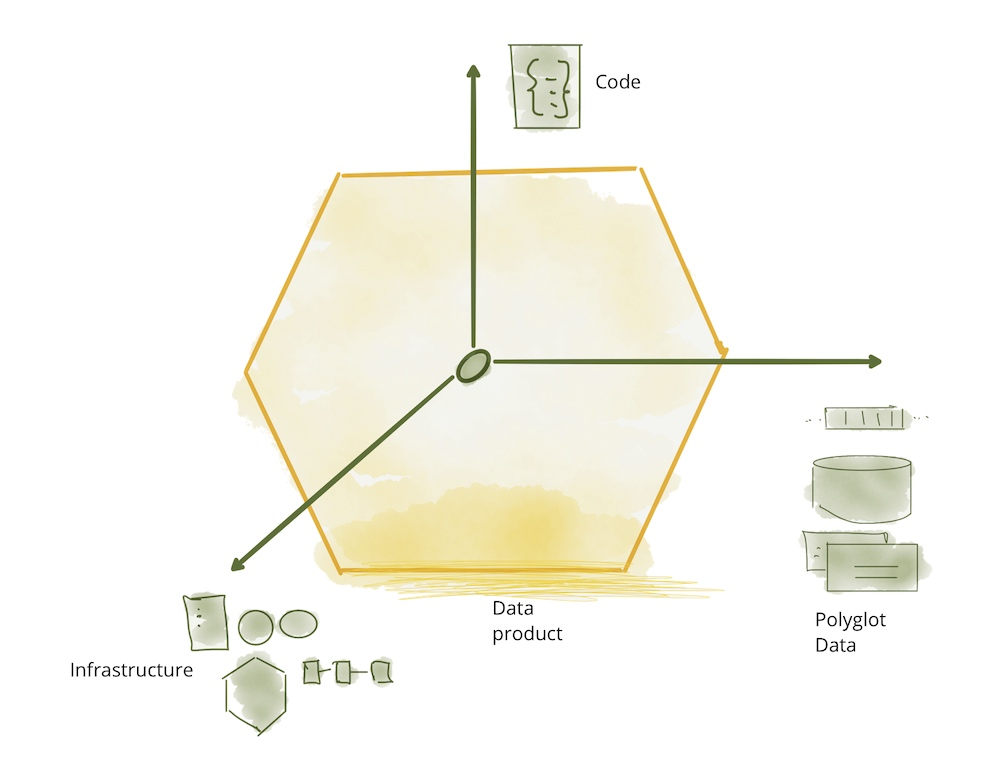
图6：数据产品组件作为一个架构量子
以下示例建立在前一节的基础上，展示了数据产品作为架构量子。图表仅包括示例内容，不旨在完整或包含所有设计和实施细节。虽然这仍然是一个逻辑表示，但它更接近物理实现。
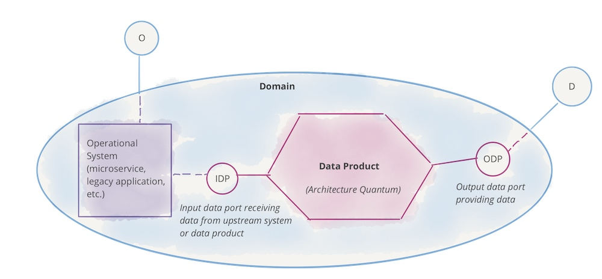
图7：符号表示：领域、其（分析）数据产品和运营系统
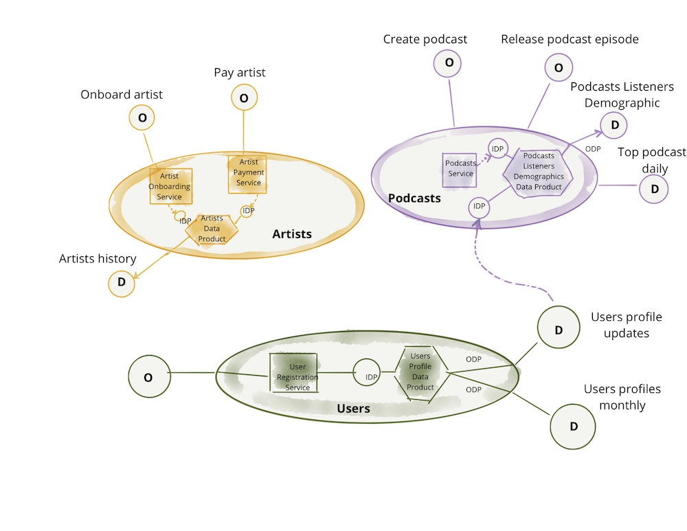
图8：数据产品服务面向领域的分析数据
注意：数据网格模型与过去的范式不同，过去的范式中管道（代码）作为独立组件从它们产生的数据中管理；而且基础设施，如仓库实例或湖泊存储账户，通常在许多数据集之间共享。数据产品是所有组件——代码、数据和基础设施——在领域有界上下文的粒度上的组合。
自助式数据平台
正如你所想象的，要构建、部署、执行、监控和访问一个简单的六边形——一个数据产品——需要配置和运行相当多的基础设施；配置这些基础设施所需的技能是专业的，并且在每个领域都难以复制。最重要的是，团队能够自主拥有其数据产品的唯一途径是访问一个高级抽象的基础设施，该基础设施消除了配置和管理数据产品生命周期的复杂性和摩擦。这就呼唤了一个新的原则，即自助式数据基础设施作为平台，以实现领域自治。
数据平台可以被视为已经存在的用于运行和监控服务的交付平台的扩展。然而，如今运营数据产品的底层技术栈与服务的交付平台看起来非常不同。这仅仅是由于大数据技术栈与运营平台的分歧。例如，领域团队可能将其服务部署为Docker容器，交付平台使用Kubernetes进行编排；然而，相邻的数据产品可能正在Databricks集群上以Spark作业的形式运行其管道代码。这就要求配置和连接两套非常不同的基础设施，而在数据网格之前，并不要求这种级别的互操作性和互联性。我个人的希望是，我们开始看到运营和数据基础设施的融合，这在有意义的地方是可能的。例如，也许在同一个编排系统上运行Spark，例如Kubernetes。
实际上，为了使分析数据产品开发对通用开发者可访问，对领域现有的开发者配置来说，自助式平台需要提供一类新工具和接口，除了简化配置。自助式数据平台必须创建支持领域数据产品开发者以较少的专业知识创建、维护和运行数据产品的工具；自助式基础设施必须包括降低当前构建数据产品所需的成本和专业化的能力。原始文档包括了自助式数据平台提供的一系列能力，包括可扩展的多语言数据存储、数据产品模式、数据管道声明和编排、数据产品血统、计算和数据本地性等。
逻辑架构：多平面数据平台
自助式平台的能力分为多个类别或平面，如模型中所称。注意：平面代表了一种存在层次——集成但独立。类似于物理和意识平面，或网络中的控制和数据平面。平面既不是层，也不意味着强烈的层次访问模型。
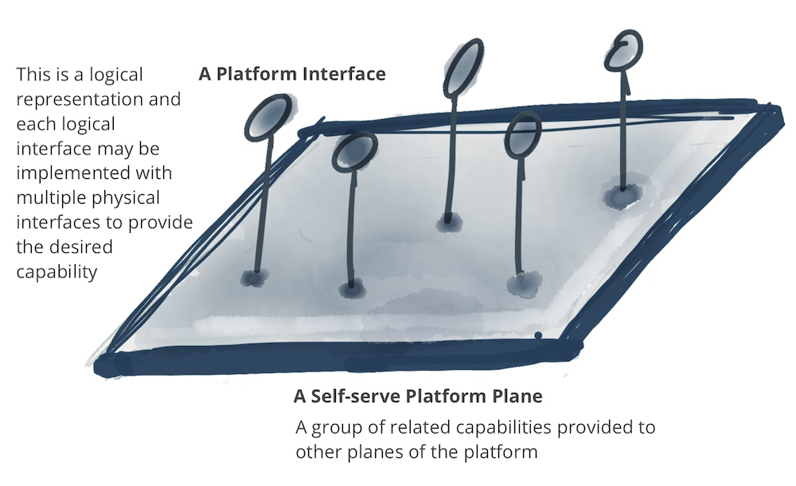
图9：符号表示：平台平面通过自助式接口提供一系列相关能力
自助式平台可以有多个平面，每个平面为不同配置的用户提供服务。在以下示例中，列出了三个不同的数据平台平面：
- 数据基础设施配置平面：支持配置运行数据产品组件和产品网格所需的底层基础设施。这包括配置分布式文件存储、存储帐户、访问控制管理系统、运行数据产品内部代码的编排、在数据产品图上配置分布式查询引擎等。我预计只有其他数据平台平面或仅高级数据产品开发者直接使用此接口。这是一个相当低级别的数据基础设施生命周期管理平面。
- 数据产品开发者体验平面：这是典型数据产品开发者使用的主要接口。此接口抽象了许多支持数据产品开发者工作流程的复杂性。它比“配置平面”提供了更高级别的抽象。它使用简单的声明式接口来管理数据产品的生命周期。它自动实现了作为一组标准和全球约定定义的跨切面关注点，应用于所有数据产品及其接口。
- 数据网格监管平面：有一些能力最好在网格级别——连接的数据产品图——全局提供。虽然每个接口的实现可能依赖于单个数据产品的能力，但在网格级别提供这些能力更为方便。例如，发现特定用例的数据产品的能力，最好通过搜索或浏览数据产品网格来提供；或者通过执行可以在网格上的多个数据产品上操作的数据语义查询来关联多个数据产品以创建更高阶的洞察力，这是最佳提供的。
以下模型仅是示例性的，并不旨在完整。虽然平面的层次结构是可取的，但下面并没有严格的分层含义。
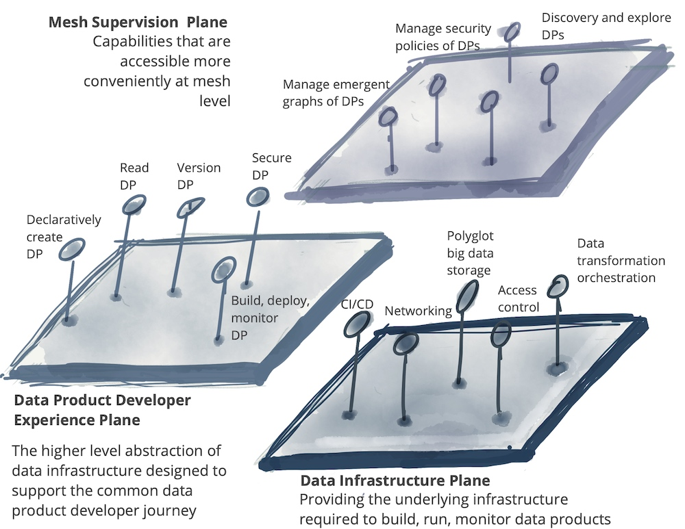
图10：自助式数据平台的多个平面 *DP代表数据产品
联邦计算治理
如您所见，数据网格遵循分布式系统架构；一系列独立的数据产品，具有独立的生命周期，由可能是独立的团队构建和部署。然而，对于大多数用例来说，为了获得更高阶数据集、洞察力或机器智能等形式的价值，需要这些独立的数据产品进行互操作；能够关联它们，创建联合，找到交集，或在大规模上对它们执行其他图形或集合操作。为了使这些操作成为可能，数据网格实施需要一个治理模型，该模型拥抱去中心化和领域自主权，通过全球标准化实现互操作性，动态拓扑，最重要的是平台自动执行决策。我称这为联合计算治理。这是一个由领域数据产品所有者和数据平台产品所有者组成的联邦决策模型，具有自治权和领域本地决策权，同时创建并遵守一套全球规则——适用于所有数据产品及其接口的规则——以确保健康和互操作的生态系统。这个组织的任务很艰巨：在集中化和去中心化之间保持平衡；哪些决策需要本地化到每个领域，哪些决策应该为所有领域全球制定。最终，全球决策有一个目的，即通过数据产品的发现和组合创造互操作性和复合网络效应。
数据网格中的治理优先级与传统的分析数据管理系统的治理不同。尽管它们都最终旨在从数据中获取价值，但传统的数据治理试图通过集中决策制定来实现这一目标，并建立数据的全球规范表示，对变化的支持最小。相比之下，数据网格的联合计算治理拥抱变化和多种解释性背景。
将系统置于恒定的紧身衣中可能会导致脆弱性的演变。
-- C.S. Holling，生态学家
逻辑架构：网格中嵌入的计算政策
支持性的组织结构、激励模型和架构是联合治理模型运作所必需的：在全球范围内为互操作性达成决策和标准，同时尊重本地领域的自治，并有效地实施全球政策。
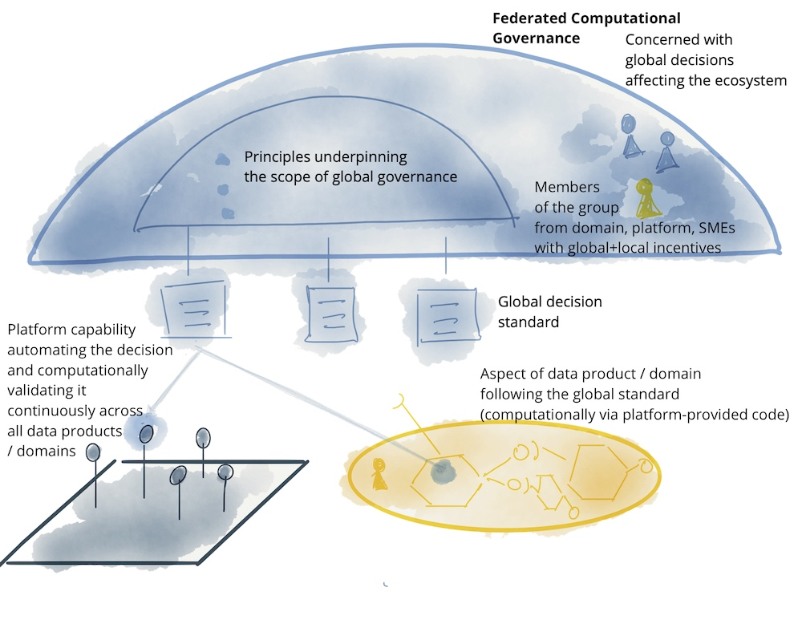
图11：符号表示：联合计算治理模型
如前所述，在全球范围内应该标准化、实施和强制执行哪些内容，以及哪些内容应该留给领域自行决定，这是一种艺术。例如，领域数据模型是一个应该本地化到最熟悉它的领域的关注点。例如，'播客听众'数据模型的语义和语法定义必须留给'播客领域'团队。然而，相比之下，如何识别'播客听众'的决定是一个全球关注点。播客听众是'用户'人口的一员——其上游有界上下文——他可以跨越领域的边界，并在其他领域如'用户播放流'中被发现。统一识别允许关联关于既是'播客听众'又是'流媒体听众'的'用户'的信息。
以下是数据网格治理模型中涉及的元素的示例。这不是一个全面的示例，只是展示了在全球层面相关的关注点。
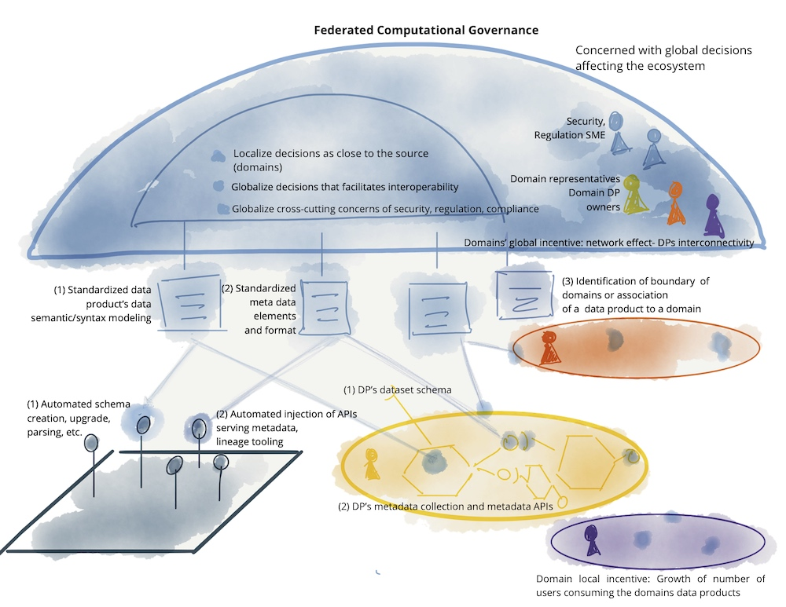
图12：联合计算治理的元素示例：团队、激励、自动化实施和数据网格的全球标准化方面
许多数据网格治理之前的实践，作为集中功能，不再适用于数据网格范式。例如，过去强调认证黄金数据集——经过集中的质量控制和认证过程并被标记为可信的——作为治理的中心功能，现在不再相关。这源于在以前的数据管理范式中，数据——无论质量和格式如何——从运营领域的数据库中提取出来，然后集中存储在需要一个集中团队对其应用清洗、协调和加密过程的数据仓库或数据湖中；通常在集中治理小组的管理下。数据网格完全去中心化了这个关注点。领域数据集只有在领域内部根据预期的数据产品质量指标和全球标准化规则经过质量保证过程后，才能成为数据产品。领域数据产品所有者最有能力决定如何衡量他们领域的数据质量，因为他们了解首先产生数据的领域运营的细节。尽管有这样的本地化决策和自治，但他们需要遵守全球联合治理团队定义的质量和SLO规范的建模，并由平台自动化。
以下表格显示了集中式（数据湖、数据仓库）数据治理模型与数据网格之间的对比。
在数据网格治理方面，与传统的集中式数据治理相比，有几个关键的差异和转变。以下是数据网格治理的一些主要方面，以及它们如何与传统的数据治理相比较：
-
团队结构：
- 传统的数据治理通常由一个集中的团队负责，而数据网格治理则采用联合团队的模式，这个团队由各个领域的代表组成。这样的结构更强调领域自治和领域间的协作。
-
数据质量：
- 集中式治理模式下，团队负责数据质量的维护。而在数据网格中，团队负责定义如何建模和衡量质量，而不是直接负责数据质量本身。
-
数据安全：
- 在集中式治理中，团队负责整体的数据安全。而在数据网格中，团队负责定义数据安全的不同方面，例如数据的敏感性级别，以便平台能够自动构建和监控。
-
法规遵从：
- 传统的数据治理模式要求团队负责遵守所有相关法规。在数据网格中，团队负责定义法规要求，以便平台能够自动构建和监控合规性。
-
数据管理：
- 集中式治理模式下，数据的保管权集中在一个团队手中。而在数据网格中，数据的保管权由各个领域共同承担，实行联合保管。
-
数据模型：
- 集中式治理模式下，团队负责全局规范的数据建模。而在数据网格中，团队负责对多义性数据元素进行建模，这些数据元素跨越多个领域的边界。
-
技术使用：
- 传统的数据治理通常依赖于集中式技术，如单一的数据湖或数据仓库。而在数据网格中，每个领域使用自助服务平台技术，以支持其独特的需求和工作流程。
-
成功衡量：
- 在集中式治理中，成功的衡量通常基于治理数据的数量或体积。而在数据网格中，成功的衡量基于网络效应——即表示网格上数据消费的连接数量。
-
错误处理：
- 传统的数据治理依赖于人工干预的手动流程来预防错误。而在数据网格中，平台通过自动化流程来检测错误并实现恢复。
数据网格治理的目标是支持网格的有效运作，同时适应不断变化和动态拓扑结构的网格。这种治理模式鼓励领域间的协作和自治，通过自动化和标准化来提高效率和互操作性，从而实现数据的最大价值。
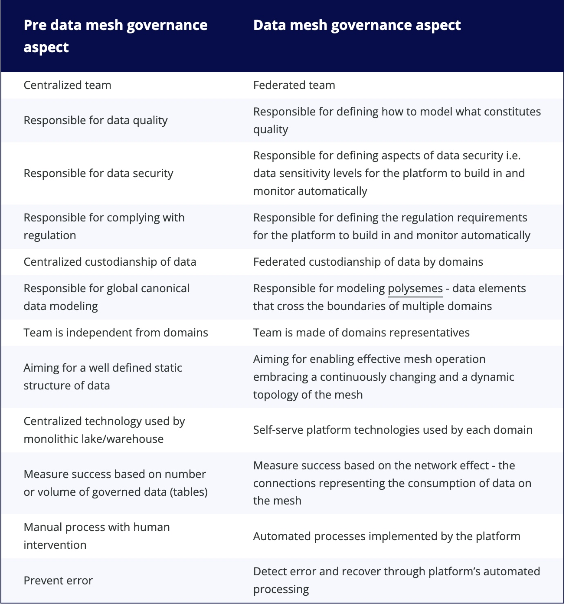
四个原则总结和高级逻辑架构
让我们总结一下，我们讨论了支撑数据网格的四个原则：
-
面向领域的分散式数据所有权和架构：这一原则强调数据应该根据其业务领域进行管理和组织，每个领域都有其负责人和团队，他们对数据的收集、存储、处理和分发负有完全的责任。这种分散化的方法有助于提高数据的可访问性和可维护性，同时促进跨领域的协作和数据共享。
-
数据即产品：将数据视为一种产品，意味着我们需要关注数据的质量、可用性和用户体验。数据产品化鼓励团队像对待任何其他商业产品一样对待数据，包括对其进行品牌化、营销和持续改进。
-
自助式数据基础设施作为平台：这一原则提倡建立一个平台，使得用户能够轻松地发现、访问和使用数据，而无需深入了解底层技术和复杂的数据处理流程。这种基础设施的自助服务特性，可以降低技术门槛，提高数据的可消费性。
-
联合计算治理：在数据网格中，计算治理是分散的，但是通过联合的方式进行协调和管理。这意味着不同的数据领域可以独立地进行计算和分析，同时保持整体的数据一致性和合规性。这种治理模式有助于提高数据处理的效率和响应速度，同时确保数据的安全和隐私。
这些原则共同构成了数据网格的高级逻辑架构，它们指导着数据网格的设计和实施，旨在实现数据管理和分析的现代化，支持快速决策、创新和业务增长。通过这些原则，组织可以更好地利用数据资源，构建一个灵活、可扩展且可持续发展的数据生态系统，以适应不断变化的技术和市场需求。
这些原则推动了一个逻辑架构模型的发展，该模型在将分析数据和操作数据更紧密地结合在同一个领域下的同时，尊重它们的基础技术差异。这些差异包括分析数据可能托管的位置、处理操作性与分析服务的不同计算技术、查询和访问数据的不同方式等。
在这个逻辑架构模型中，以下几个关键点被特别强调：
-
领域驱动的数据集成：
- 数据不是简单地聚集在一起，而是根据业务领域进行组织和集成。领域团队负责管理和维护与其领域相关的数据，无论是操作数据还是分析数据。这种集成方式确保了数据的上下文相关性和业务连贯性。
-
技术异构性的管理：
- 尽管操作数据和分析数据在同一个领域内被管理，但它们可能需要不同的技术栈和平台来最有效地处理和分析。逻辑架构模型允许这种异构性，同时提供了必要的抽象和接口，以确保不同技术之间的兼容性和互操作性。
-
数据的可访问性和治理：
- 逻辑架构模型提供了一种机制，使得数据消费者可以轻松地发现、查询和访问所需的数据。同时，它也确保了数据治理的一致性，包括安全性、合规性和数据质量控制，无论数据是操作性的还是分析性的。
-
自动化和自助服务：
- 为了降低技术复杂性并提高效率，逻辑架构模型鼓励使用自动化工具和服务，以及自助服务平台。这些工具和平台使得领域团队能够独立地管理和优化他们的数据产品，同时也支持数据消费者自助获取和使用数据。
通过这种逻辑架构模型，数据网格不仅能够弥合操作数据和分析数据之间的鸿沟，还能够充分利用各自的技术优势，为组织提供更加灵活、高效和创新的数据管理解决方案。这种方法有助于构建一个可持续发展的数据生态系统，支持组织在快速变化的市场中保持竞争力。
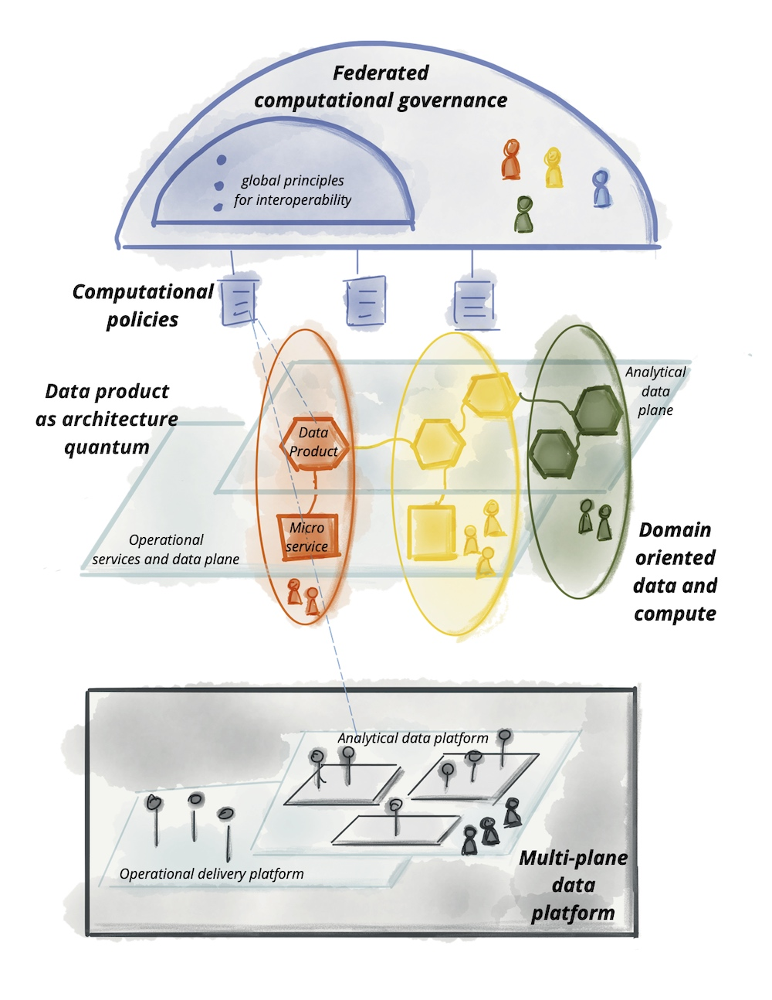
确实，通过前面的讨论，我们已经建立了一个共同的语言框架和逻辑心智模型，这将帮助我们共同推进数据网格的组件蓝图的详细规划，包括数据产品、平台以及所需的标准化等方面。
-
数据产品（Data Product）：
- 数据产品是数据网格中的核心构建块，它封装了数据内容、相关的元数据以及为数据提供服务的代码。数据产品应该被设计成易于发现、理解和使用，同时保证数据的质量和安全性。数据产品的创建、维护和分发需要遵循一系列标准化的流程和接口，以确保跨领域的一致性和互操作性。
-
平台（Platform）：
- 数据平台提供了支持数据产品开发、部署、运行和监管的基础设施和服务。这包括数据存储、计算资源、数据处理管道、API服务等。平台应该提供自助式的服务，使领域团队能够高效地管理和优化他们的数据产品，同时降低技术复杂性和提高自动化程度。
-
标准化（Standardizations）：
- 为了实现数据网格中的互操作性和一致性，需要制定一系列全球标准和约定。这些标准化包括数据模型、数据安全级别、数据质量指标、API设计原则等。标准化不仅有助于简化数据产品的设计和实现，还能够提高数据的可发现性和可访问性。
通过这些组件的详细规划和实施，我们可以确保数据网格能够有效地支持组织的数据战略，促进数据驱动的决策和创新。这种基于领域的、产品化的数据管理方法有助于打破数据孤岛，提高数据的流动性和价值，最终推动组织的整体发展和竞争力。